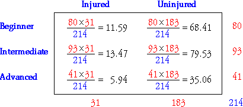

Assessing independence, based on a sample
Independence is an important special case of models for bivariate data. However it is a property of the joint population probabilities and in most practical situations these are unknown.
We must assess independence from a sample of individuals — a contingency table.
Skiing injuries
The contingency table below categorises a sample of 214 child skiers according to their skiing ability and whether or not they were injured.
| Injured | Uninjured | Total | |
|---|---|---|---|
| Beginner | 20 | 60 | 80 |
| Intermediate | 9 | 84 | 93 |
| Advanced | 2 | 39 | 41 |
| Total | 31 | 183 | 214 |
Independence would be an important characteristic of the child skiers since it would imply that the occurrence of injury did not depend on skiing ability.
Are those sample data consistent with a model of independence?
Marginal distributions and independence
The marginal counts in a contingency table describe the univariate distributions of the two variables on their own, but do not tell you anything about their relationship. For example, the two contingency tables below have the same margins.
|
|
However the table on the left supports an extremely strong relationship — if the row category is known, we can accurately predict the column category. On the other hand, there is no evidence of association in the table on the right — each row of the table contains the column categories in the same proportions.
Estimated cell counts under independence
In practice, the pattern of counts in a contingency table is rarely so easily interpreted. A first step is to determine the pattern that is most consistent with independence of the rows and columns, based on the observed margins.
| C1 | C2 | C3 | Total | |
|---|---|---|---|---|
| R1 | ? | ? | ? | 30 |
| R2 | ? | ? | ? | 40 |
| R3 | ? | ? | ? | 30 |
| Total | 30 | 40 | 30 | 100 |
If the rows and columns are independent, the conditional probabilities are the same for each row, so we distribute each marginal row total between the column categories in the same proportions — determined by the marginal proportions for the column categories.
This pattern is gives the estimated cell counts and the following formula can be used to evaluate them.

where n denotes the total for the whole table and nx and ny denote the marginal totals for row x and column y.
Skiing injuries
We now find the pattern of estimated cell counts for the skiing injury data that is most consistent with independence of ability level and injury, based only on the margins of the observed contingency table.
| Injured | Uninjured | Total | |
|---|---|---|---|
| Beginner | ? | ? | 80 |
| Intermediate | ? | ? | 93 |
| Advanced | ? | ? | 41 |
| Total | 31 | 183 | 214 |
If injury is indeed independent of skiing ability, then we estimate that the proportion of the 80 beginners who are injured would be the same as the marginal proportion who are injured. Since 31 out of 214 skiers are injured, we therefore expect that the number of injured beginners would be
This is an example of the general formula that was presented earlier,

The complete table of estimated cell counts is:
